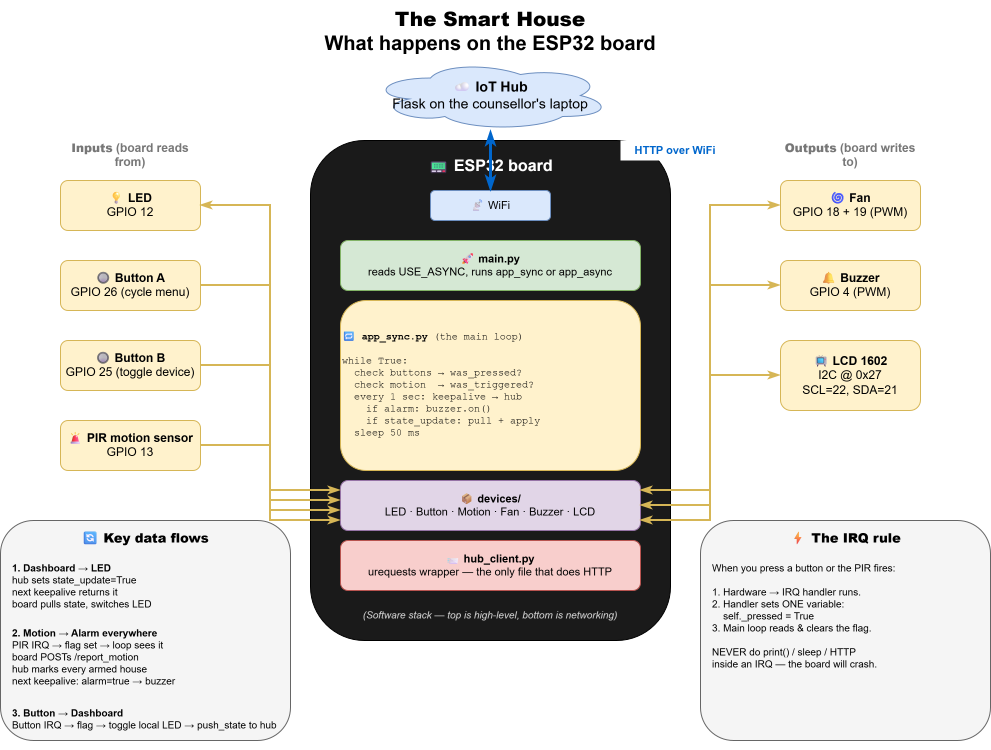
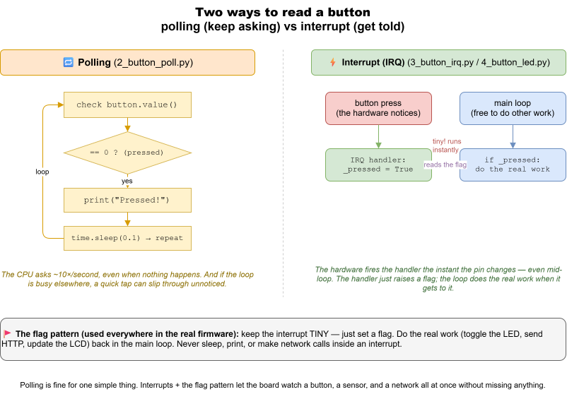

Day 2 — ESP32 First Steps
Goal: Forget the hub for a day. Get your ESP32 to blink an LED, then read a button, then make the button toggle the LED — all running ON the board, no WiFi.
Time: ~2 hours.
Meet your board
Here's the ESP32 "smart house" and everything wired to it — the LED, buttons, and sensors you'll drive today, with their GPIO pin numbers. Keep this handy; the pin numbers live in config.py.

🔬 Runnable examples: the code you'll write today is ready to open and run in examples/day2_esp32_basics/ —
1_blink.py,2_button_poll.py,3_button_irq.py,4_button_led.py. Try typing them yourself first; use the files if you get stuck or want to compare.

Part 1 — Meet MicroPython on the ESP32 (20 min)
Your laptop runs CPython (regular Python). Your ESP32 runs MicroPython — almost the same language but smaller, with extra modules (machine, network) for talking to hardware.
Setup Thonny
🛠 Try this:
- Plug the ESP32 into USB.
- Open Thonny.
- Tools → Options → Interpreter → MicroPython (ESP32) → Port: pick the COM port (e.g.
COM5). If you don't see one, check that the cable is a data cable, not just a charging cable. - OK. The bottom Shell panel should now show:
```
MicroPython v1.23.0 on 2024-... ; ESP32 module
Type "help()" for more information.
```
This is a Python REPL running ON YOUR ESP32 over the USB cable. Anything you type runs on the board.
🛠 Try this:
>>> 2 + 2
4
>>> import os
>>> os.uname()
✅ Milestone 2.1: You can talk to the board's REPL.
Part 2 — Blink an LED (20 min)
The Keyestudio board has an LED on GPIO 12.
🛠 Try this (type each line at the >>> prompt and press Enter):
>>> from machine import Pin
>>> led = Pin(12, Pin.OUT)
>>> led.value(1) # LED on
>>> led.value(0) # LED off
💡 Why?
- Pin(12, Pin.OUT) says "treat GPIO 12 as an output". The ESP32 has a tiny switch on each pin; OUT mode lets us control whether the pin sends 0V or 3.3V.
- led.value(1) puts 3.3V on the pin → current flows → LED lights up.
Make it blink
🛠 Try this: in Thonny's editor (top panel), make a new file blink.py:
from machine import Pin
import time
led = Pin(12, Pin.OUT)
while True:
led.value(1)
time.sleep(0.5)
led.value(0)
time.sleep(0.5)
Save it on the board: File → Save as… → MicroPython device → blink.py.
Press F5 (Run). The LED blinks every half second. Press Ctrl-C in the shell to stop.
⚡ Stretch: Make it blink "SOS" in Morse code (3 short, 3 long, 3 short).
✅ Milestone 2.2: Your LED blinks.
Part 3 — Read a button (25 min)
Buttons are inputs. The Keyestudio board has two: Button A on GPIO 26, Button B on GPIO 25.
These buttons are wired with a pull-up: when you DON'T press them, the pin reads 1. When you press, it reads 0. Yes, that's backwards from what feels natural — a 14-yo who notices that has actually understood the hardware.
🛠 Try this at the REPL:
>>> from machine import Pin
>>> button = Pin(26, Pin.IN, Pin.PULL_UP)
>>> button.value() # before pressing
1
>>> button.value() # press and hold while pressing Enter
0
Polling: ask the button "are you pressed?" over and over
🛠 Try this in button_test.py:
from machine import Pin
import time
button = Pin(26, Pin.IN, Pin.PULL_UP)
while True:
if button.value() == 0:
print("Pressed!")
time.sleep(0.1)
Run it. Press the button — you'll get a flood of "Pressed!" messages because you can hold it for hundreds of milliseconds.
💡 Why so many messages? The loop runs 10 times per second. You hold the button for ~200ms → ~2 messages per press. We need a better approach.
The interrupt approach
An interrupt (IRQ) is the hardware saying: "hey CPU, this pin just changed — drop what you're doing and run this function." We don't have to keep asking.
🛠 Try this:
from machine import Pin
import time
button = Pin(26, Pin.IN, Pin.PULL_UP)
def on_press(pin):
print("Button pressed!")
button.irq(trigger=Pin.IRQ_FALLING, handler=on_press)
# Just sit here and wait
while True:
time.sleep(1)
Press the button. ONE message per press. (You may sometimes get 2 or 3 because the metal contact "bounces" — that's a real-world hardware thing.)
💡 Pin.IRQ_FALLING = trigger on the moment the pin goes from 1 to 0 (the press). Pin.IRQ_RISING = trigger on release.
✅ Milestone 2.3: One IRQ message per press.
Part 4 — Button toggles LED (30 min)
Now combine them. Press button A → LED toggles.
Try it yourself first
Write button_led.py. Use an IRQ. Don't peek at the solution for 5 minutes.
▶ Solution
from machine import Pin
import time
led = Pin(12, Pin.OUT)
button = Pin(26, Pin.IN, Pin.PULL_UP)
def on_press(pin):
led.value(not led.value()) # flip 0->1 or 1->0
button.irq(trigger=Pin.IRQ_FALLING, handler=on_press)
while True:
time.sleep(1)
⚠️ Subtlety: We do led.value(not led.value()) inside the IRQ. That's OK because it's very fast. NEVER do slow things (like time.sleep, print, or HTTP calls) inside an IRQ — the board will crash. The pattern we use in the real project (see devices/button.py) is to set a flag in the IRQ and read it from the main loop. We'll do that on Day 3.
✅ Milestone 2.4: Press button → LED toggles.
Part 5 — Read the project's device code (15 min)
You just learned what's behind devices/led.py and devices/button.py.
🛠 Try this: Open claude/implementation/smart_house/devices/led.py in PyCharm and read it. It's 21 lines.
class LED:
def __init__(self, pin_num):
self._pin = Pin(pin_num, Pin.OUT)
self._pin.value(0)
def on(self):
self._pin.value(1)
def off(self):
self._pin.value(0)
def is_on(self):
return self._pin.value() == 1
def state(self):
return {"active": self.is_on()}
Same Pin(12, Pin.OUT) you used at the REPL — wrapped in a class so the rest of the firmware can write led.on() instead of led.value(1).
🛠 Try this: Open devices/button.py and find the IRQ handler. Notice how _on_irq just sets self._pressed = True — it doesn't toggle anything itself. The main loop calls was_pressed() to consume the flag.
💡 Why this pattern? The IRQ is fast (just a flag set). The main loop, which has plenty of time, does the real work (toggle, send HTTP, update LCD). This is THE rule of embedded programming: interrupts should do almost nothing.
Part 6 — Stretch challenges (10 min)
⚡ Easy: Make button A turn the LED on and button B turn it off.
⚡ Medium: Press button A → LED stays on for 2 seconds, then auto-off. (Hint: keep a turn_off_at timestamp in the main loop, no sleep in the IRQ.)
⚡ Hard: Implement debouncing — ignore button presses that come within 50 ms of the previous one. Look up "switch debounce" if you need a hint.
What you learned today
- The ESP32 runs MicroPython; you can REPL into it.
Pin(n, Pin.OUT)controls outputs;Pin(n, Pin.IN, Pin.PULL_UP)reads inputs.- Polling = check repeatedly in a loop. Interrupts = the pin tells you when it changed.
- IRQ handlers must be FAST — set a flag, do the work elsewhere.
- The project's
devices/*.pyfiles are thin wrappers around what you just did.
Tomorrow: WiFi, HTTP from the board, and your physical house appears in the dashboard. → day3.md